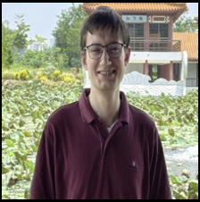

I'm a PhD student with the Bayesian and Neural Systems Group under Dr. Henry Gouk, having joined in September 2026. I'm also a student of the Sensing, Processing and AI for Defence and Security (SPADS) Centre for Doctoral Training at the University of Edinburgh.
My research will focus on developing methods for Bayesian deep learning suitable for use-cases where data is generated strategically. I was formerly an MSc in AI student at the School of Informatics at the University of Edinburgh between 2025-26 and was awarded the MEng degree in Electronic & Electrical Engineering from the University of Strathclyde in June 2025 with a focus on Digital Signal Processing.